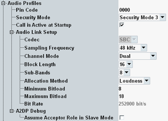

This section configures connections for audio profiles. Option R&S CMW-KS602 is required.

Specifies PIN code for an audio connection. The default PIN code 0000 is used by most devices. Some devices require changing the code.
Remote command:Specifies security mode for audio tests in master mode.
Remote command:Enables the indication of the active call to the EUT for the audio profile hands-free.
Remote command:Configures advanced audio distribution profile (A2DP) typically used by headphones or speakers. Configure audio profile settings in accordance with the EUT configuration and capabilities.
Option R&S CMW-KS603 is required.
Specifies A2DP codec. Subband coding is mandatory for the A2DP profile.
Remote command:Specifies the sampling frequency for analysis and encoding.
Remote command:- Mono: Single channel encoding
- Dual: Two independent channel encodings. Each channel is encoded independently (2 x mono channel mode)
- Stereo: Two channel encoding. Encoding uses the audio data in both left and right channels.
- Joint stereo: Two channel encoding. Encoding uses the audio data in both left and right channels, however the encoding is done on L+R and L-R (sum and difference) audio samples.
Specifies the number of blocks of audio samples that are encoded in a single SBC frame.
Remote command:Specifies the number of subbands the audio spectrum of generated signal.
Remote command:Defines the algorithm used to calculate the no. of allocated bits to represent each subband sample. For the decoder in the sink, all features have to be supported. The encoder in the audio source mode has to support at least the loudness method.
Remote command:Specifies allowed variable range of the bitpool value. The bitpool value is the number of bits that represent one block of audio sample data for one channel. For stereo and joint stereo modes, it is the no. of bits that represent one block of audio samples for both left and right channels.
The R&S CMW uses the maximum bitpool value to encode the audio stream.
Remote command:Queries the bit rate calculated from the A2DP audio link parameters.
The audio data bit rate is specified by A2DP specification, chapter "12.9 Calculation of Bit Rate and Frame Length".
The table below shows the maximum bit rate for an EUT acting as an A2DP sink.
If the value exceeds the allowed maximum value, two exclamation marks are shown in the audio link setup area.
Allows the EUT to take control of the establishment of the A2DP connection when the R&S CMW acts as the slave. This setting assists some EUTs to establish the A2DP connection.
Option R&S CMW-KS603 is required.
Remote command: